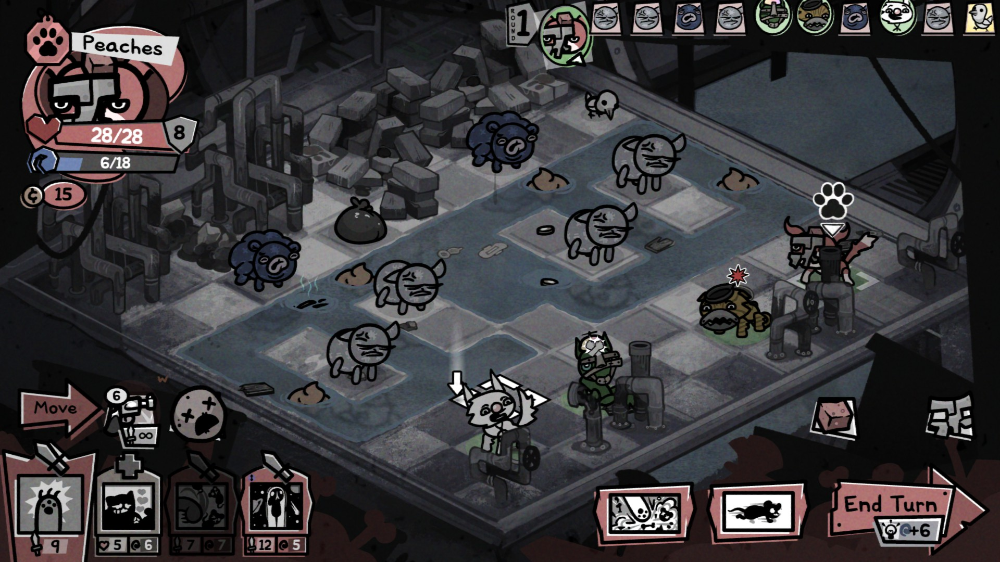
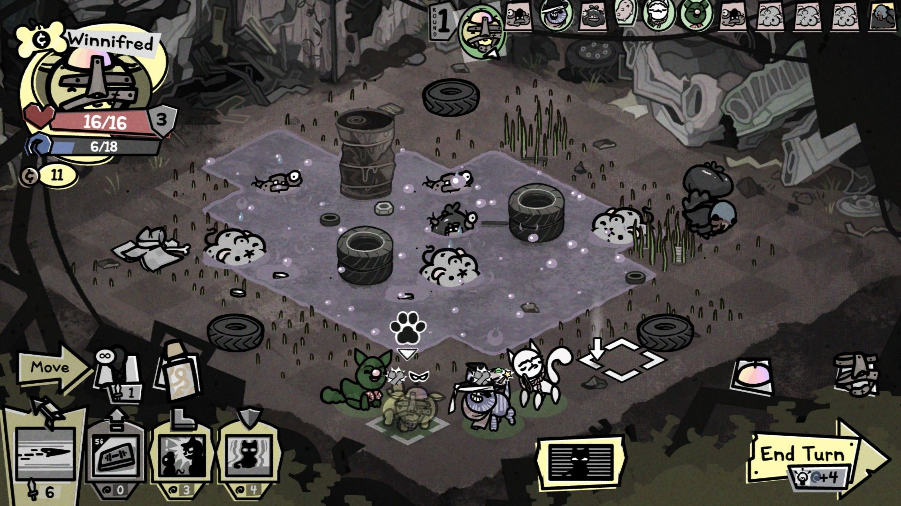
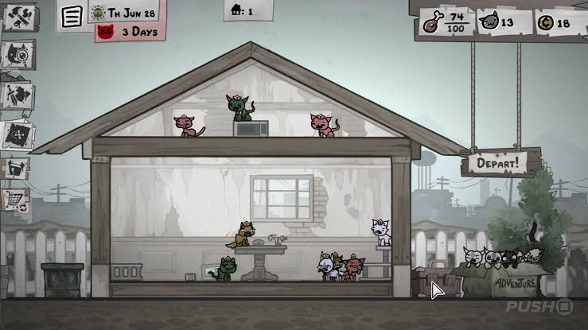

Sobre o jogo:
Mewgenics é um RPG tático roguelike centrado em gatos.
O jogador cria e administra um família de gatos, combinando características genéticas,
habilidades e equipamentos para formar uma equipe.
A aventura acontece em um mundo habitado por gatos extremamente peculiares,
onde as diferentes gerações da família podem herdar características e
habilidades de seus antepassados. Conforme a família cresce, novos gatos
são enviados para explorar um mundo cheio de criaturas, perigos e situações absurdas.
Imagens:


Gameplay e Trailer:
Trilha sonora:
- Nome da faixa: Flush.
- Número da faixa: 2.
- Nome da faixa: Feline Invader.
- Número da faixa: 10.
- Nome da faixa: HUMANICIDE.
- Número da faixa: 19.
Informações:
- Lançamento: 2026
- Desenvolvedora: Edmund McMillen, Tyler Glaiel
- Publicadora: Edmund McMillen, Tyler Glaiel